Мониторинг
Непрерывный сбор данных о состоянии пациента и окружающей среды.
AUTONOMOUS MEDICAL COMPLEX
Концепт подземной клиники 2040 года: автономная архитектура, профилактика, адаптивные палаты, технологичные отделения и замкнутые системы жизнеобеспечения.
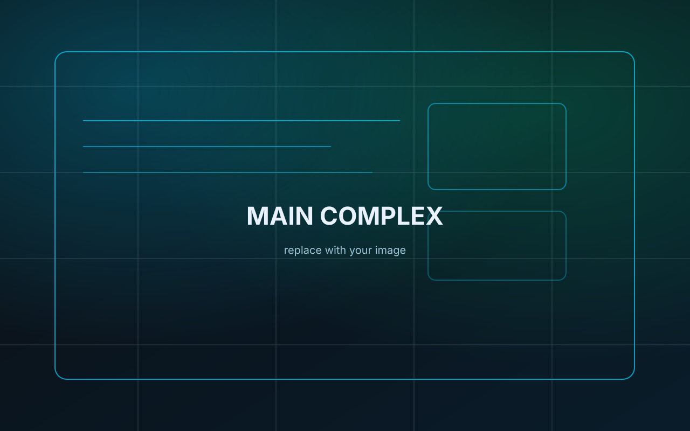
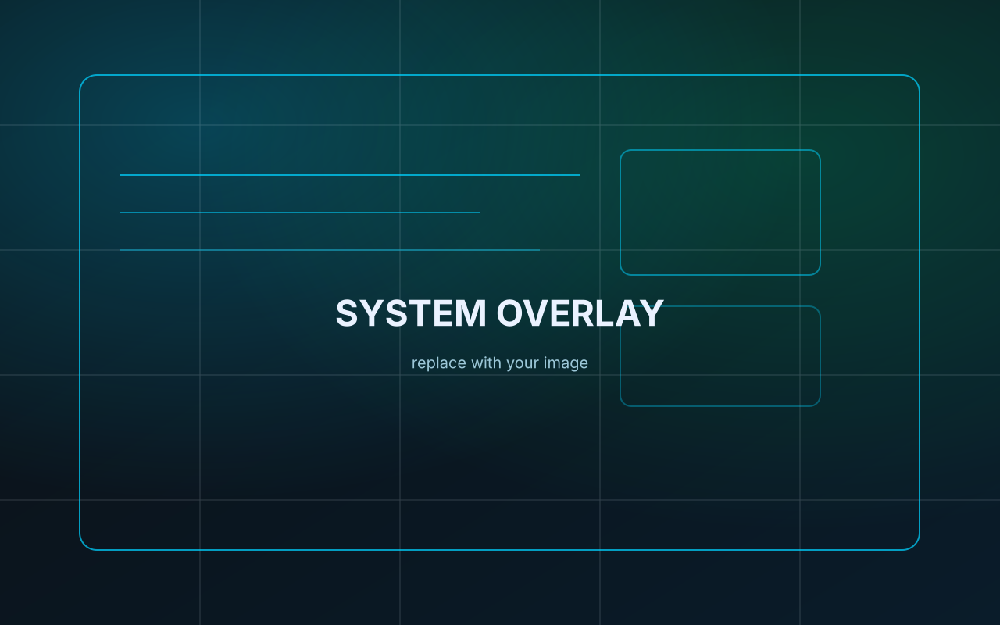
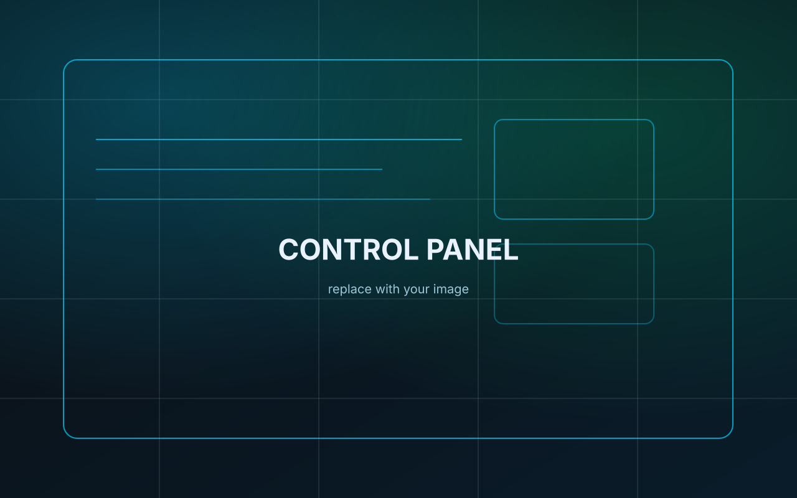
О проекте
MED-VAULT 7 — это концепция медицинского комплекса, рассчитанного на стабильную работу в условиях изоляции, ограниченных ресурсов и повышенных требований к безопасности. В проекте больница рассматривается не как набор отдельных кабинетов, а как единая система, где архитектура, инженерия, профилактика и цифровые технологии работают вместе.
Здесь важна не только медицинская помощь, но и сама среда: как поддерживается воздух, где берётся вода, как организованы чистые и технические потоки, как пациент чувствует себя внутри пространства и как система предотвращает риски ещё до того, как они станут проблемой.
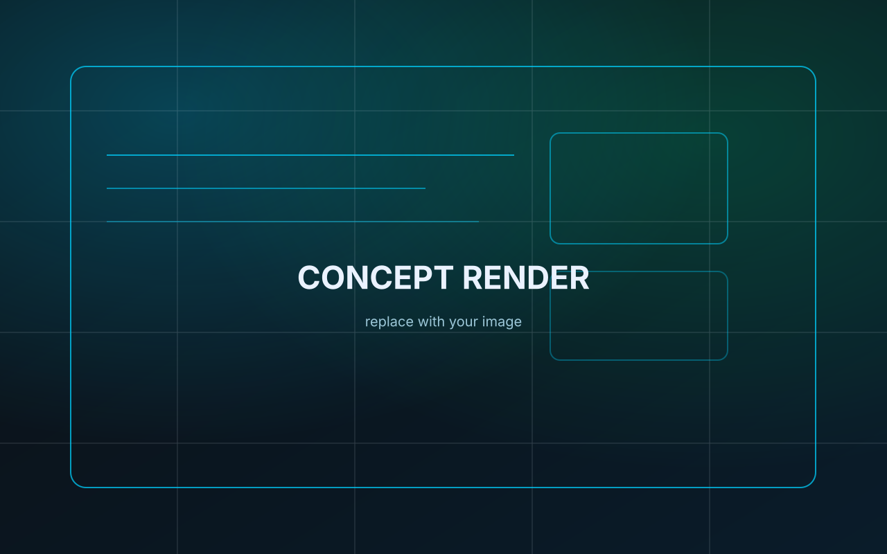
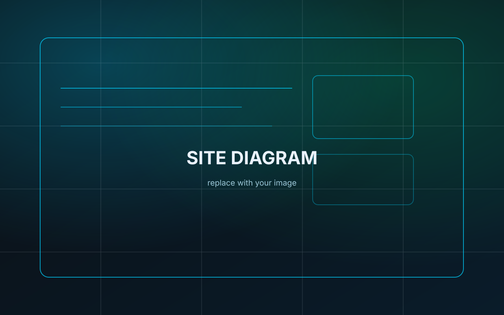
Профилактика
Непрерывный сбор данных о состоянии пациента и окружающей среды.
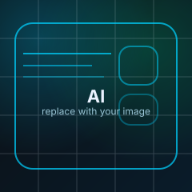
Обработка показателей, прогнозирование рисков и помощь персоналу.
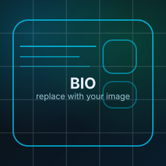
Контроль жизненных показателей и ранних отклонений.
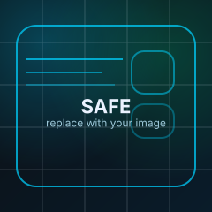
Снижение нагрузки на систему за счёт предотвращения осложнений.
Структура комплекса
Входная зона, первичный контроль, сортировка потоков и маршрутизация пациентов.
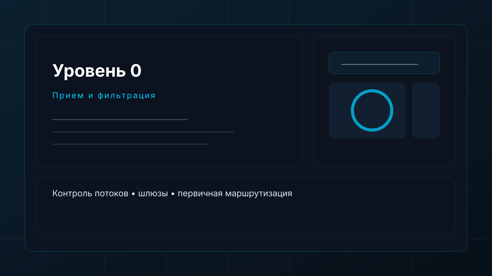
Пациентские модули
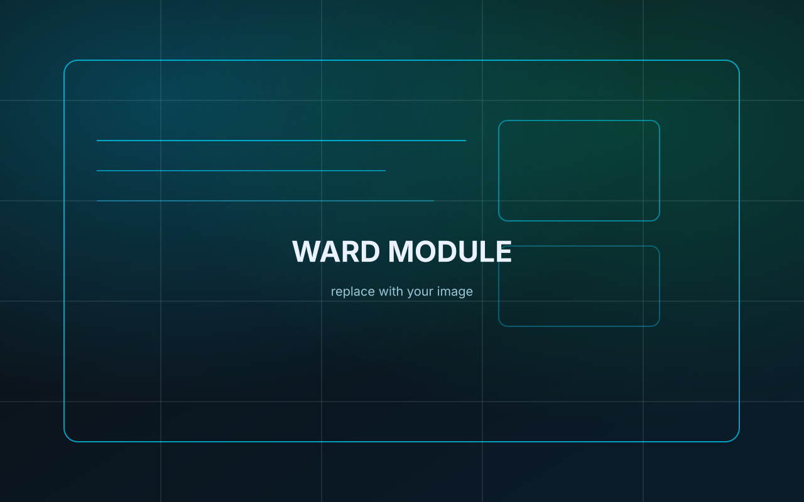
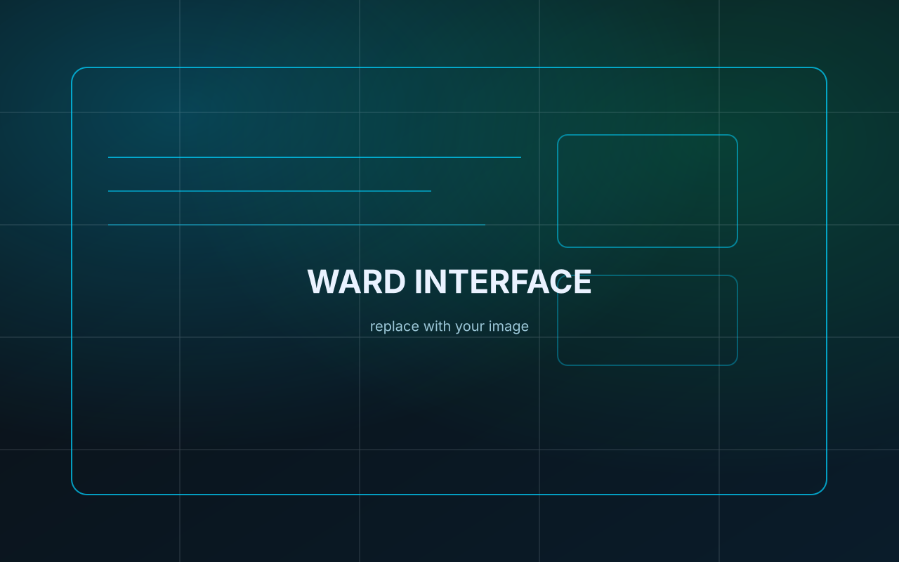
Палаты проектируются как автономные модули. Внутри поддерживаются параметры микроклимата, освещения, стерильности и комфорта. Пространство адаптируется под сценарий использования: наблюдение, восстановление, повышенный контроль или полная изоляция.
Система объединяет интеллектуальную кровать, локальную вентиляцию, цифровой интерфейс, встроенные датчики и визуальные среды для снижения стресса. Благодаря этому палата становится не просто комнатой, а активной частью лечебного процесса.
Отделения
Роботизированные сценарии, точность, минимизация инвазивности.
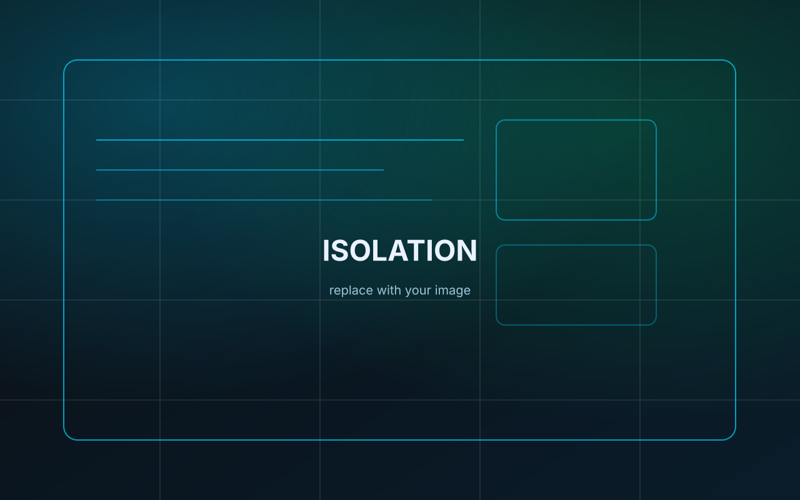
Изоляция, отдельные потоки, усиленные режимы контроля среды.
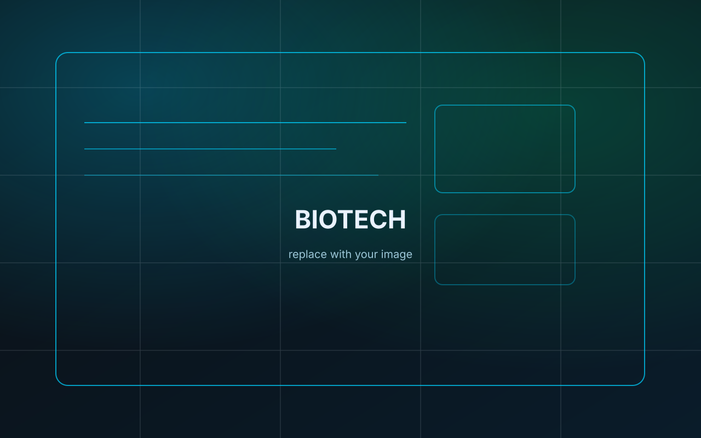
Персонализированные протоколы, восстановление тканей и аналитика.
VR-сцены, экзоподдержка, мягкое восстановление активности.
Персонал комплекса
Комплекс работает как единая команда: клинический персонал принимает ключевые решения, средний медперсонал отвечает за наблюдение и уход, инженерные службы поддерживают стабильность среды, а роботизированные помощники берут на себя логистику и повторяющиеся операции.
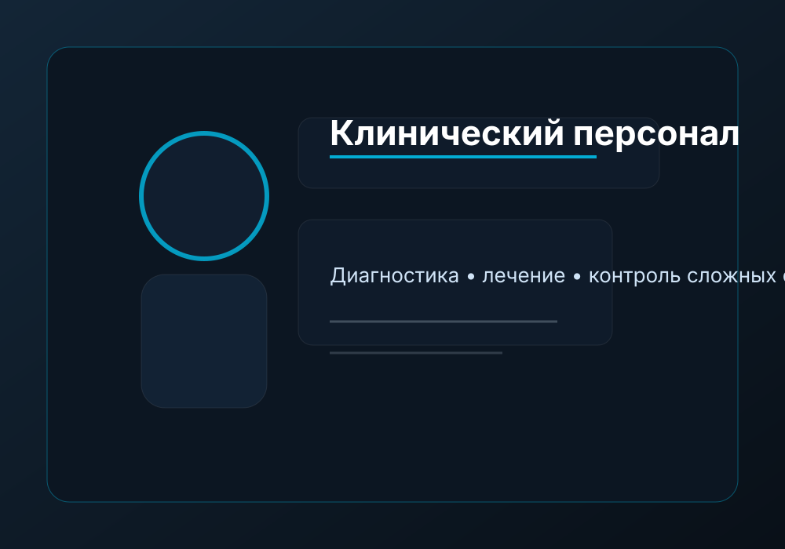
Диагностика, лечение, координация сложных случаев и принятие клинических решений.
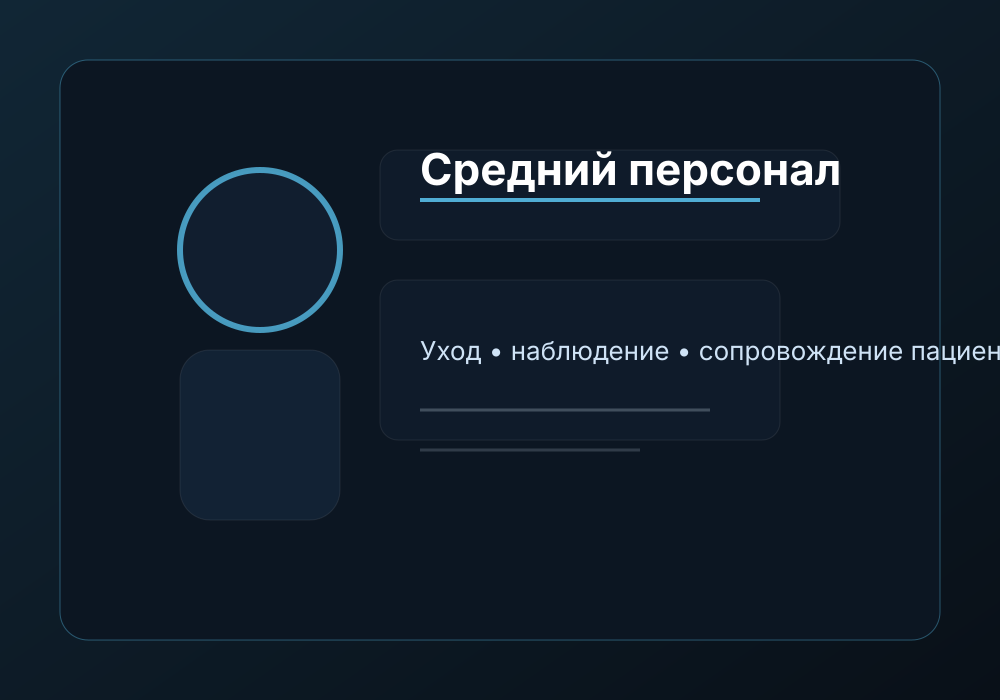
Наблюдение, сопровождение пациентов, контроль процедур и повседневный уход.
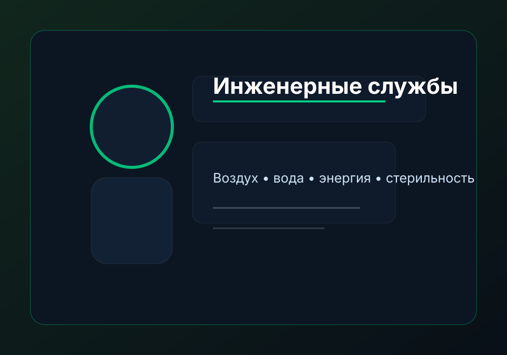
Системы воздуха, воды, энергии, стерильности и технической устойчивости комплекса.
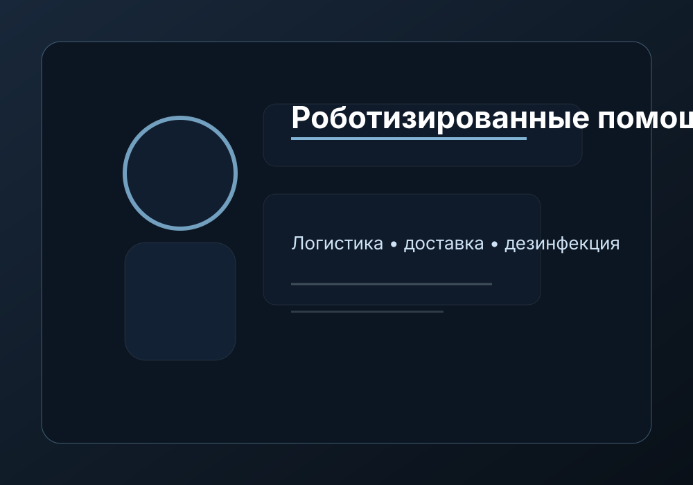
Доставка, дезинфекция, внутренняя логистика и поддержка персонала в рутинных задачах.
Жизнеобеспечение
Многоступенчатая очистка, накопление и повторное использование в разных контурах.
Фильтрация, контроль потоков и разделение режимов давления по зонам.
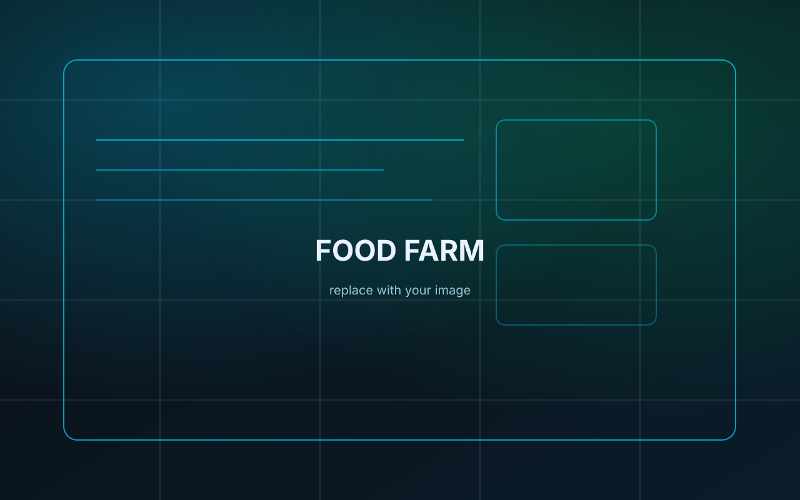
Локальное выращивание, технологичные фермы и биоконтуры обеспечения.
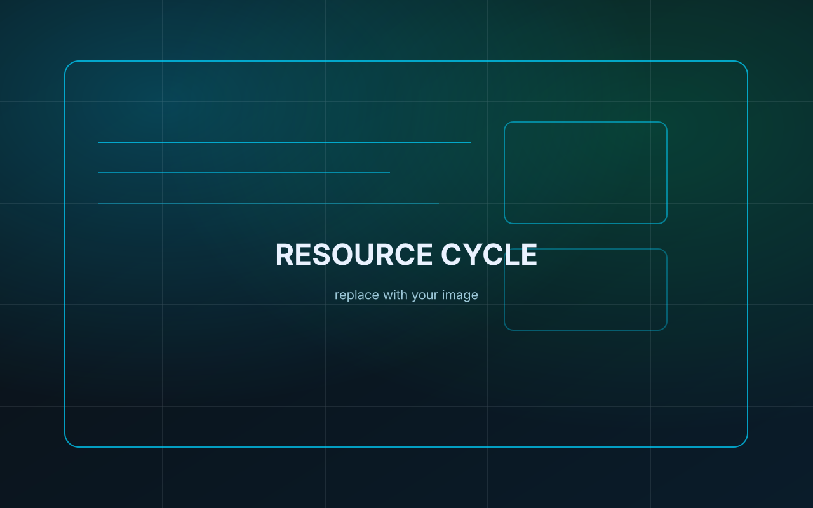
Ресурсы внутри комплекса связаны друг с другом: вода, воздух, растения, человек и переработка образуют единую систему.
Технологии